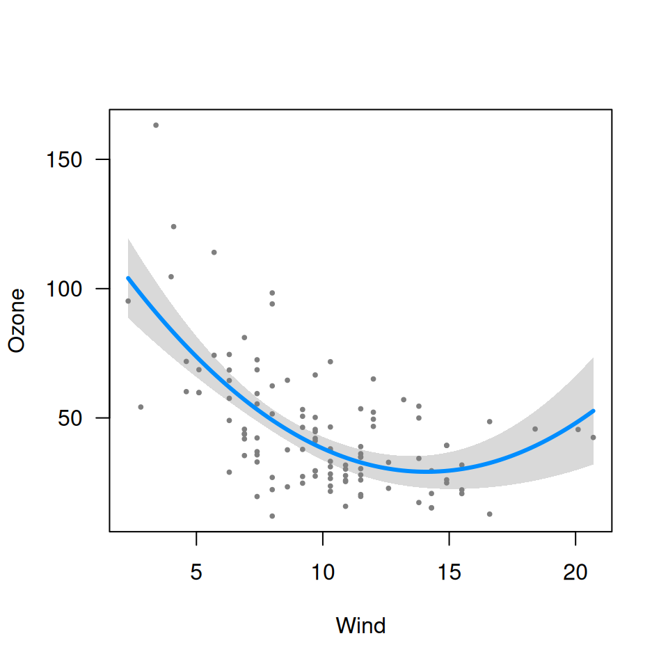
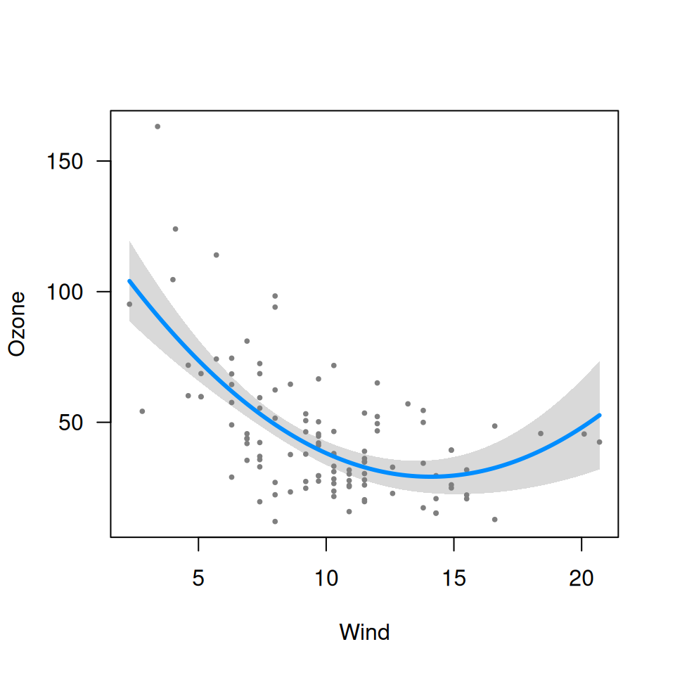
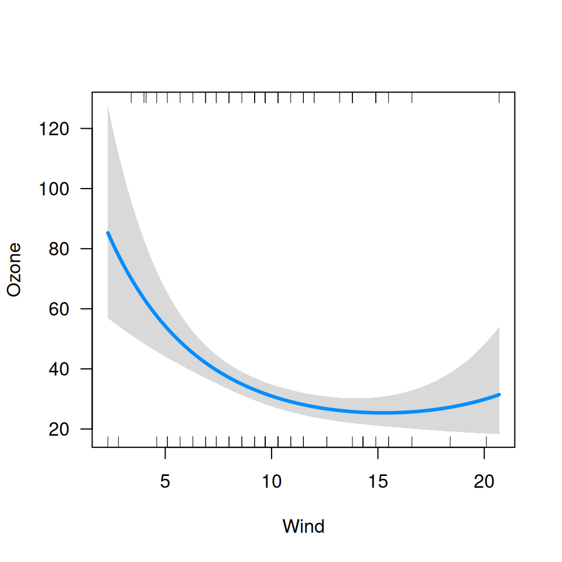
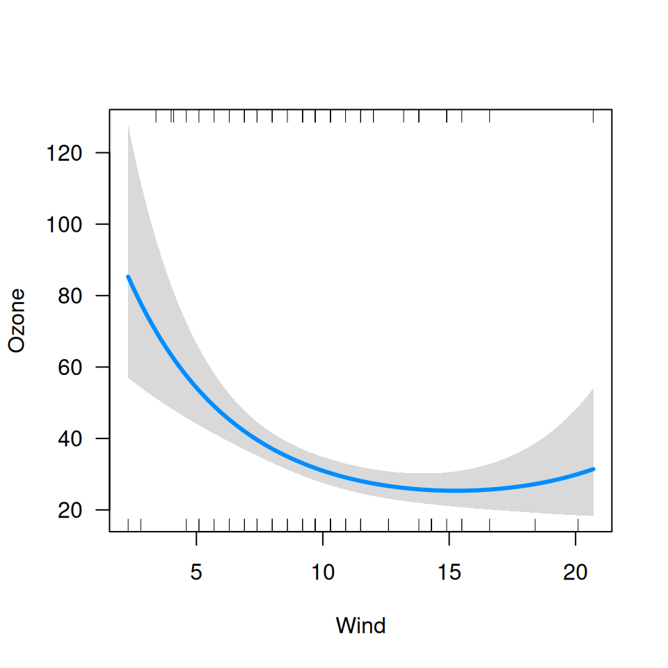
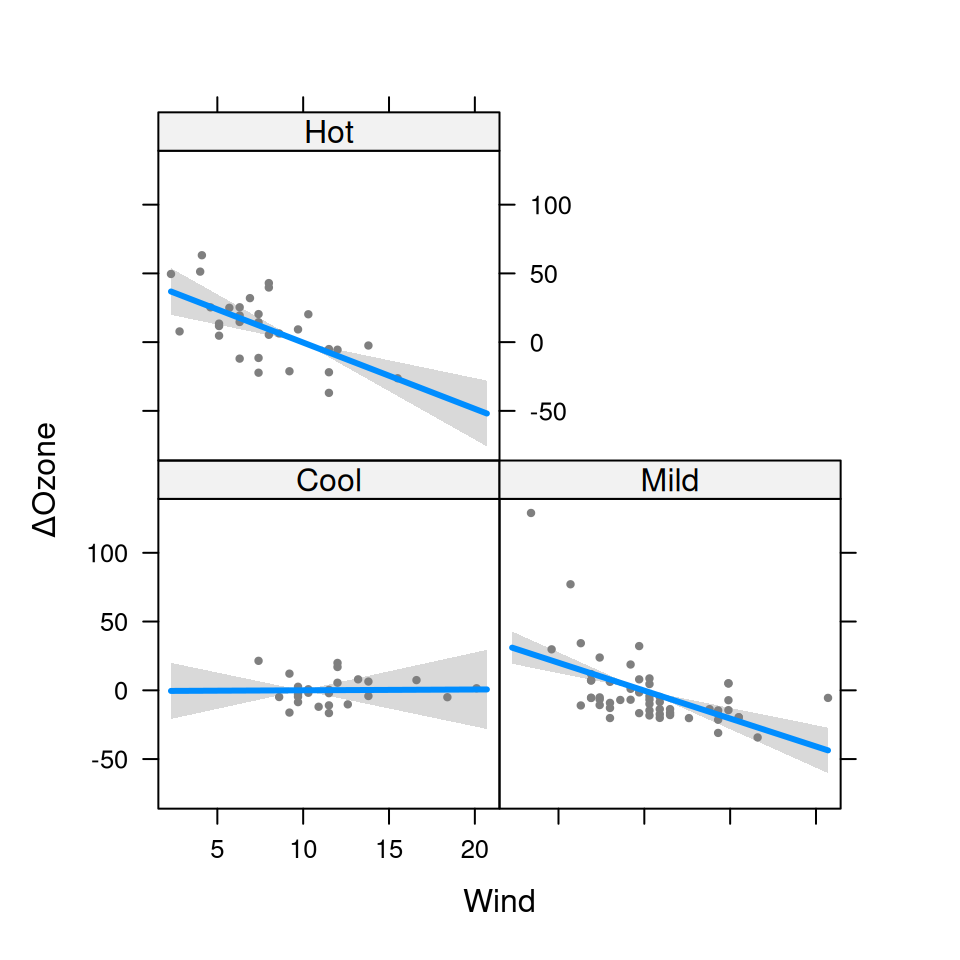
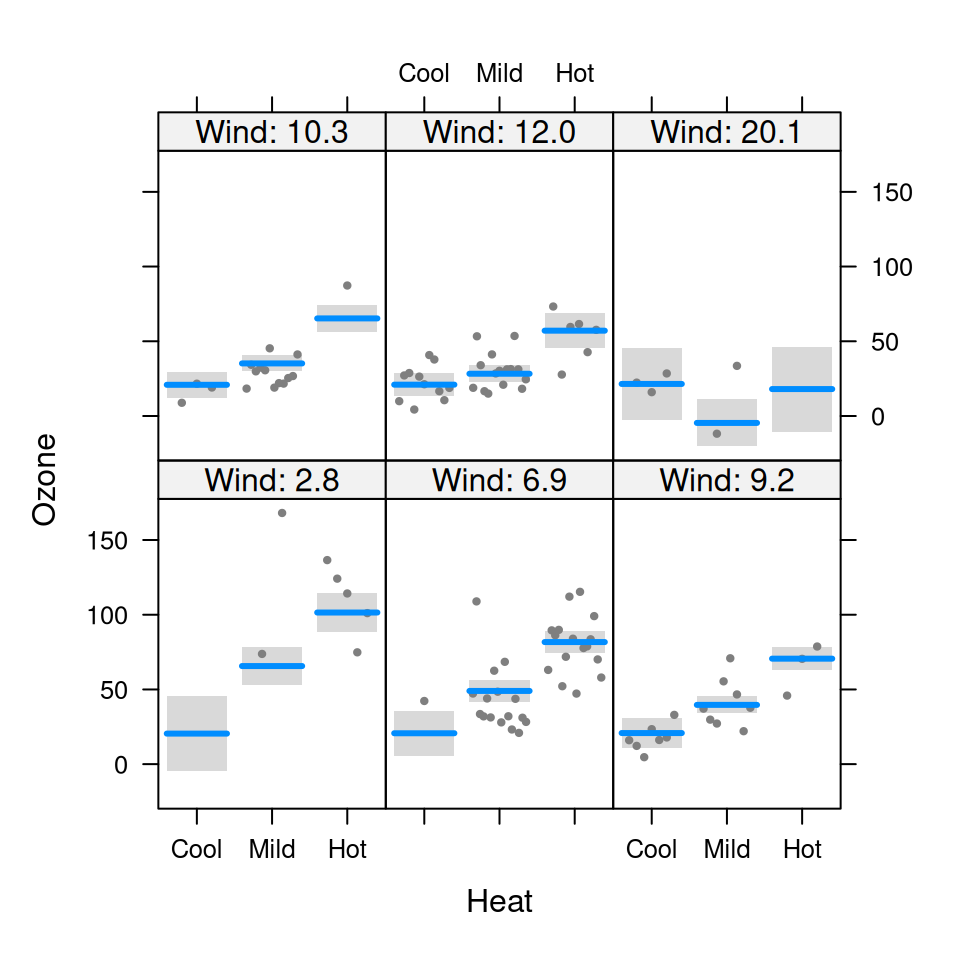
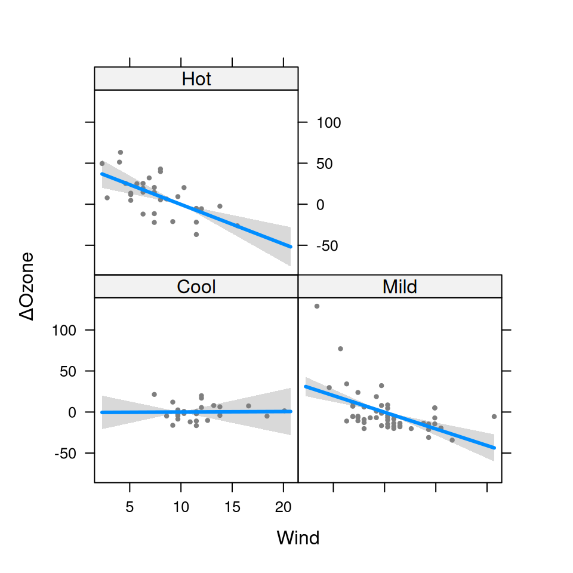
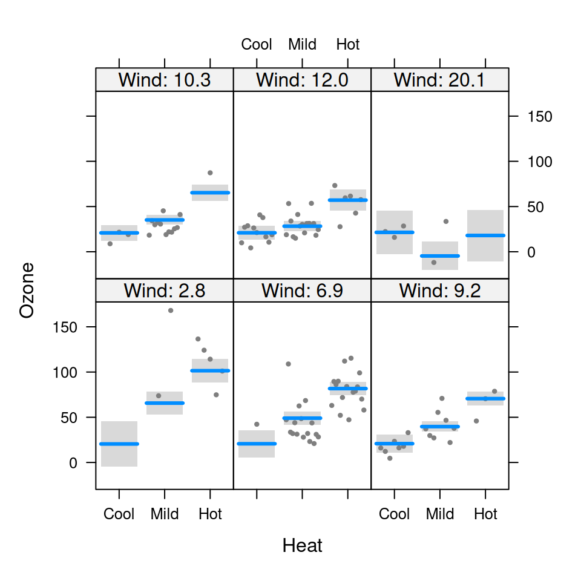

Visualization of regression functions
visreg.RdA function for visualizing regression models quickly and easily.
Default plots contain a confidence band, prediction line, and partial
residuals. Factors, transformations, conditioning, interactions, and a
variety of other options are supported. The visreg function
performs the calculations and, if plot=TRUE (the default), these
calculations are passed to plot.visreg for plotting.
Arguments
- fit
The fitted model object you wish to visualize. Any object with 'predict' and 'model.frame' methods are supported, including lm, glm, gam, rlm, coxph, and many more.
- xvar
Character string specifying the variable to be put on the x-axis of your plot. Both continuous variables and factors are supported.
- by
(Optional) A variable allowing you to divide your plot into cross-sections based on levels of the
byvariable; particularly useful for visualizing models with interactions. Supplied as a character string. Uses the lattice package. Both continuous variables and factors are supported.- breaks
If a continuous variable is used for the
byoption, thebreaksargument controls the values at which the cross-sections are taken. By default, cross-sections are taken at the 10th, 50th, and 90th quantiles. Ifbreaksis a single number, it specifies the number of breaks. Ifbreaksis a vector of numbers, it specifies the values at which the cross-sections are to be taken. Each partial residuals appears exactly once in the plot, in the panel it is closest to.- type
The type of plot to be produced. The following options are supported:
If 'conditional' is selected, the plot returned shows the value of the variable on the x-axis and the change in response on the y-axis, holding all other variables constant (by default, median for numeric variables and most common category for factors).
If 'contrast' is selected, the plot returned shows the effect on the expected value of the response by moving the x variable away from a reference point on the x-axis (for numeric variables, this is taken to be the mean).
For more details, see references.
- data
The data frame used to fit the model. Typically, visreg() can figure out where the data is, so it is not necessary to provide this. In some cases, however, the data set cannot be located and must be supplied explicitly.
- trans
(Optional) A function specifying a transformation for the vertical axis.
- scale
By default, the model is plotted on the scale of the linear predictor. If
scale='response'for a glm, the inverse link function will be applied so that the model is plotted on the scale of the original response.- xtrans
(Optional) A function specifying a transformation for the horizontal axis. Note that, for model terms such as
log(x), visreg automatically plots on the original axis (see examples).- alpha
Alpha level (1-coverage) for the confidence band displayed in the plot (default: 0.05).
- nn
Controls the smoothness of the line and confidence band. Increasing this number will add to the computational burden, but produce a smoother plot (default: 101).
- cond
Named list specifying conditional values of other explanatory variables. By default, conditional plots in visreg are constructed by filling in other explanatory variables with the median (for numeric variables) or most common category (for factors), but this can be overridden by specifying their values using
cond(see examples).- jitter
Adds a small amount of noise to
xvar. Potentially useful if many observations have exactly the same value. Default is FALSE.- collapse
If the
predictmethod forfitreturns a matrix, should this be returns as multiple visreg objects bound together as a list (collapse=FALSE) or collapsed down to a singlevisregobject (collapse=TRUE).- plot
Send the calculations to
plot.visreg? Default is TRUE.- ...
Graphical parameters (e.g.,
ylab) can be passed to the function to customize the plots. Ifby=TRUE, lattice parameters can be passed, such as layout (see examples below).
Details
See plot.visreg for plotting options, such as changing
the appearance of points, lines, confidence bands, etc.
Value
A visreg or visregList object (which is simply a list
of visreg objects). A visreg object has three
components:
- fit
A data frame with
nnrows containing the fit of the model asxvarvaries, along with lower and upper confidence bounds (namedvisregFit,visregLwr, andvisregUpr, respectively). The fitted matrix of coefficients.- res
A data frame with
nrows, wherenis the number of observations in the original data set used to model. This frame contains information about the residuals, namedvisregRegandvisregPos; the latter records whether the residual was positive or negative.- meta
Contains meta-information needed to construct plots, such as the name of the x and y variables, whether there were any
byvariables, etc.
References
Breheny, P. and Burchett, W. (2017), Visualizing regression models using visreg. https://journal.r-project.org/archive/2017/RJ-2017-046/index.html
Examples
###################
## Linear models ##
###################
## Basic
fit <- lm(Ozone ~ Solar.R + Wind + Temp, data=airquality)
visreg(fit)
 visreg(fit, "Wind", type="contrast")
visreg(fit, "Wind", type="contrast")
 visreg(fit, "Wind", type="conditional")

## Factors
airquality$Heat <- cut(airquality$Temp, 3, labels=c("Cool","Mild","Hot"))
fit.heat <- lm(Ozone ~ Solar.R + Wind + Heat, data=airquality)
visreg(fit.heat, "Heat", type="contrast")
visreg(fit, "Wind", type="conditional")

## Factors
airquality$Heat <- cut(airquality$Temp, 3, labels=c("Cool","Mild","Hot"))
fit.heat <- lm(Ozone ~ Solar.R + Wind + Heat, data=airquality)
visreg(fit.heat, "Heat", type="contrast")
 visreg(fit.heat, "Heat", type="conditional")

## Transformations
fit1 <- lm(Ozone ~ Solar.R + Wind + Temp + I(Wind^2), data=airquality)
fit2 <- lm(log(Ozone) ~ Solar.R + Wind + Temp, data=airquality)
fit3 <- lm(log(Ozone) ~ Solar.R + Wind + Temp + I(Wind^2), data=airquality)
visreg(fit1, "Wind")
visreg(fit2, "Wind", trans=exp, ylab="Ozone")
visreg(fit3, "Wind", trans=exp, ylab="Ozone")
## Conditioning
visreg(fit, "Wind", cond=list(Temp=50))
visreg(fit.heat, "Heat", type="conditional")

## Transformations
fit1 <- lm(Ozone ~ Solar.R + Wind + Temp + I(Wind^2), data=airquality)
fit2 <- lm(log(Ozone) ~ Solar.R + Wind + Temp, data=airquality)
fit3 <- lm(log(Ozone) ~ Solar.R + Wind + Temp + I(Wind^2), data=airquality)
visreg(fit1, "Wind")
visreg(fit2, "Wind", trans=exp, ylab="Ozone")
visreg(fit3, "Wind", trans=exp, ylab="Ozone")
## Conditioning
visreg(fit, "Wind", cond=list(Temp=50))
 visreg(fit, "Wind", print.cond=TRUE)
#> Conditions used in construction of plot
#> Solar.R: 207
#> Temp: 79
visreg(fit, "Wind", cond=list(Temp=100))

## Interactions
fit.in1 <- lm(Ozone~ Solar.R + Wind*Heat, data=airquality)
visreg(fit.in1, "Wind", by="Heat")

visreg(fit.in1, "Heat", by="Wind")
visreg(fit.in1, "Wind", by="Heat", type="contrast")
visreg(fit.in1, "Heat", by="Wind", breaks=6)
visreg(fit.in1, "Heat", by="Wind", breaks=c(0,10,20))
## Overlay
visreg(fit.in1, "Wind", by="Heat", overlay=TRUE)
visreg(fit, "Wind", print.cond=TRUE)
#> Conditions used in construction of plot
#> Solar.R: 207
#> Temp: 79
visreg(fit, "Wind", cond=list(Temp=100))

## Interactions
fit.in1 <- lm(Ozone~ Solar.R + Wind*Heat, data=airquality)
visreg(fit.in1, "Wind", by="Heat")

visreg(fit.in1, "Heat", by="Wind")
visreg(fit.in1, "Wind", by="Heat", type="contrast")
visreg(fit.in1, "Heat", by="Wind", breaks=6)
visreg(fit.in1, "Heat", by="Wind", breaks=c(0,10,20))
## Overlay
visreg(fit.in1, "Wind", by="Heat", overlay=TRUE)
 ######################
## Nonlinear models ##
######################
## Logistic regression
data("birthwt", package="MASS")
birthwt$race <- factor(birthwt$race, labels=c("White","Black","Other"))
birthwt$smoke <- factor(birthwt$smoke, labels=c("Nonsmoker","Smoker"))
fit <- glm(low~age+race+smoke+lwt, data=birthwt, family="binomial")
visreg(fit, "lwt",
xlab="Mother's Weight", ylab="Log odds (low birthweight)")
visreg(fit, "lwt", scale="response", partial=FALSE,
xlab="Mother's Weight", ylab="P(low birthweight)")
visreg(fit, "lwt", scale="response", partial=FALSE,
xlab="Mother's Weight", ylab="P(low birthweight)", rug=2)
######################
## Nonlinear models ##
######################
## Logistic regression
data("birthwt", package="MASS")
birthwt$race <- factor(birthwt$race, labels=c("White","Black","Other"))
birthwt$smoke <- factor(birthwt$smoke, labels=c("Nonsmoker","Smoker"))
fit <- glm(low~age+race+smoke+lwt, data=birthwt, family="binomial")
visreg(fit, "lwt",
xlab="Mother's Weight", ylab="Log odds (low birthweight)")
visreg(fit, "lwt", scale="response", partial=FALSE,
xlab="Mother's Weight", ylab="P(low birthweight)")
visreg(fit, "lwt", scale="response", partial=FALSE,
xlab="Mother's Weight", ylab="P(low birthweight)", rug=2)
 ## Proportional hazards
require(survival)
#> Loading required package: survival
data(ovarian)
#> Warning: data set ‘ovarian’ not found
ovarian$rx <- factor(ovarian$rx)
fit <- coxph(Surv(futime, fustat) ~ age + rx, data=ovarian)
visreg(fit, "age", ylab="log(Hazard ratio)")
## Robust regression
require(MASS)
#> Loading required package: MASS
fit <- rlm(Ozone ~ Solar.R + Wind*Heat, data=airquality)
visreg(fit, "Wind", cond=list(Heat="Mild"))
#> Warning: Note that you are attempting to plot a 'main effect' in a model that contains an
#> interaction. This is potentially misleading; you may wish to consider using the 'by'
#> argument.
#> Conditions used in construction of plot
#> Solar.R: 207
#> Heat: Mild
## And more...; anything with a 'predict' method should work
## Return raw components of plot
v <- visreg(fit, "Wind", cond=list(Heat="Mild"))
#> Warning: Note that you are attempting to plot a 'main effect' in a model that contains an
#> interaction. This is potentially misleading; you may wish to consider using the 'by'
#> argument.
#> Conditions used in construction of plot
#> Solar.R: 207
#> Heat: Mild
## Proportional hazards
require(survival)
#> Loading required package: survival
data(ovarian)
#> Warning: data set ‘ovarian’ not found
ovarian$rx <- factor(ovarian$rx)
fit <- coxph(Surv(futime, fustat) ~ age + rx, data=ovarian)
visreg(fit, "age", ylab="log(Hazard ratio)")
## Robust regression
require(MASS)
#> Loading required package: MASS
fit <- rlm(Ozone ~ Solar.R + Wind*Heat, data=airquality)
visreg(fit, "Wind", cond=list(Heat="Mild"))
#> Warning: Note that you are attempting to plot a 'main effect' in a model that contains an
#> interaction. This is potentially misleading; you may wish to consider using the 'by'
#> argument.
#> Conditions used in construction of plot
#> Solar.R: 207
#> Heat: Mild
## And more...; anything with a 'predict' method should work
## Return raw components of plot
v <- visreg(fit, "Wind", cond=list(Heat="Mild"))
#> Warning: Note that you are attempting to plot a 'main effect' in a model that contains an
#> interaction. This is potentially misleading; you may wish to consider using the 'by'
#> argument.
#> Conditions used in construction of plot
#> Solar.R: 207
#> Heat: Mild